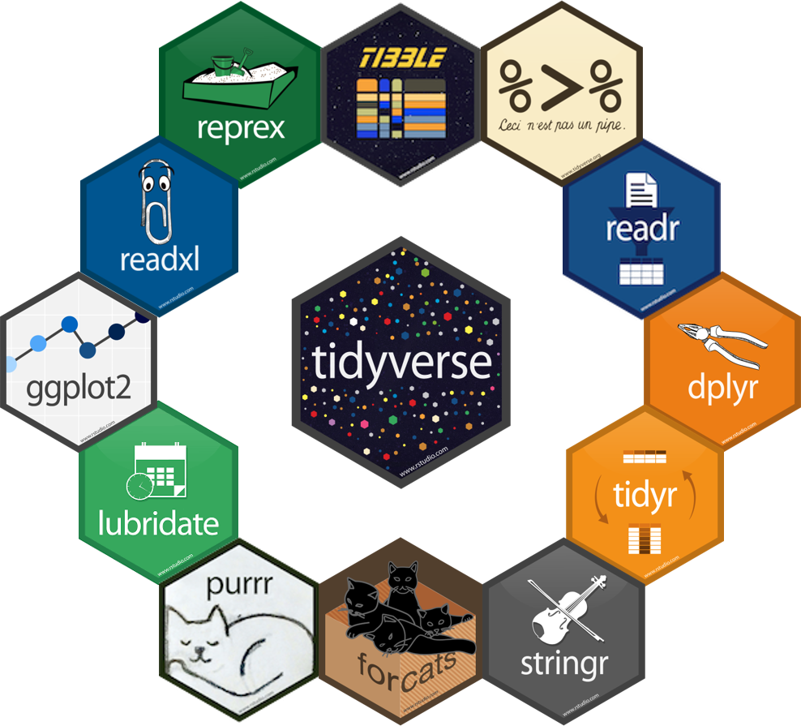

Introdução ao 
Introdução ao 
Universidade Federal do Delta do Parnaíba
5 de julho de 2024
Repositório
Para clonar o repositório que contém os materiais utilizados nos minicursos “Introdução ao R” e “Práticas no R” localmente, utilize o seguinte comando Git:
I - Introdução Geral
O que é a linguagem R?
- Linguagem Estatística e Computacional;
- R é uma linguagem de programação orientada a objetos projetada para análise estatística e computacional de dados.
- Flexibilidade e Aplicações;
- Oferece flexibilidade, principalmente funcional, para realizar manipulações de grandes volumes de dados, sendo útil na era do big data.
- Tipagem Fraca.
- Permite operações entre diferentes tipos de dados sem a necessidade explícita de conversão.
Por que usar o R?
- Visualização e Análise de Dados;
- Esta linguagem facilita a criação de gráficos e visualizações de dados detalhados, essenciais para explorar padrões e comunicar resultados de forma clara.
- Open-source.
- Por ser um software de código aberto, possui uma comunidade ativa que desenvolve e compartilha pacotes, permitindo uma vasta gama de aplicações e suporte colaborativo.
O que é o RStudio?
- Ambiente de Desenvolvimento Integrado (IDE);
- RStudio é um ambiente de desenvolvimento integrado projetado especificamente para trabalhar com a linguagem R.
- Suas vantagens.
- Facilita o desenvolvimento e análise de código R com recursos como edição de scripts, gerenciamento de projetos e depuração integrada.
Passos da instalação
Visite CRAN - The Comprehensive R Archive Network e baixe a linguagem, através de um arquivo executável, para seu sistema operacional;
Visite RStudio Desktop e baixe o instalador para seu sistema operacional;
Siga as instruções fornecidas nos instaladores para completar o processo de instalação.


RStudio Cloud
Visite a Posit Cloud para acessar e utilizar o RStudio sem a necessidade de instalação local;
Necessário realizar login (através de uma conta Google, Github, entre outros) para acessar o RStudio Cloud.

Definição de Diretório
Primeiramente, através da função getwd(), podemos verificar o diretório de trabalho atual.
Também podemos utilizar setwd() para definir um novo diretório de trabalho.
Pacotes
Os pacotes no R são coleções de funções e conjuntos de dados desenvolvidos pela comunidade.
Um pouco sobre tidyverse

Um pouco sobre tidyverse
O tidyverse oferece uma alternativa aos métodos base do R para análise de dados em dados organizados de forma “arrumada” (tidy data).
── Attaching core tidyverse packages ──────────────────────── tidyverse 2.0.0 ──
✔ dplyr 1.1.4 ✔ readr 2.1.5
✔ forcats 1.0.0 ✔ stringr 1.5.1
✔ ggplot2 3.5.1 ✔ tibble 3.2.1
✔ lubridate 1.9.3 ✔ tidyr 1.3.1
✔ purrr 1.0.2
── Conflicts ────────────────────────────────────────── tidyverse_conflicts() ──
✖ dplyr::filter() masks stats::filter()
✖ dplyr::lag() masks stats::lag()
ℹ Use the conflicted package (<http://conflicted.r-lib.org/>) to force all conflicts to become errorsOperador pipe
O operador pipe no R é uma ferramenta poderosa para encadear operações e facilitar a leitura e escrita de código. Existem dois operadores de pipe comuns:
- Operador
%>%(pipe do pacotemagrittr)- O operador
%>%é usado para encadear funções, passando o resultado de uma função como argumento para a próxima função.
- O operador
- Operador
|>(pipe do pacote base)- Introduzido no R 4.1.0, o operador pipe nativo
|>é uma alternativa ao operador domagrittr, oferencendo uma maneira semelhante de encadear operações.
- Introduzido no R 4.1.0, o operador pipe nativo
R como calculadora
A linguagem R nos permite realizar cálculos simples e complexos, fornecendo operações aritméticas como adição, subtração, multiplicação, divisão e outras operações matemáticas.
- Potência
R como calculadora
- Módulo
- Divisão inteira
- Raiz Quadrada
II - Estrutura de Dados
Tipos de estruturas de dados
Na linguagem R, há várias estruturas de dados fundamentais que são usadas para armazenar e manipular informações de maneiras específicas.
- Vetores: Unidimensionais;
- Matrizes: Bidimensionais;
- Data Frames: Bidimensionais;
- Arrays: Multidimensionais;
- Listas: Flexíveis.
Tipos de estruturas de dados

O que são vetores?
Um vetor é uma estrutura de dados que contém elementos do mesmo tipo. Pode ser numérico, de caracteres, lógico, etc.
Principais classes de dados
- numeric;
- integer;
- character;
- logical;
- complex;
- raw;
- list.
Quando se mistura diferentes tipos de dados em uma operação, o R usa uma hierarquia de coerção para determinar como converter estes dados.
logical ➡ integer ➡ numeric ➡ complex ➡ character
Conversão de classes de dados
Também podemos converter objetos (ou vetores) de uma classe para outra. Utilizaremos o exemplo do objeto c que está como logical, para numeric.
Ou, neste caso, podemos tornar o objeto a, naturalmente definido como numeric, em character.
- Funções de coerção
- Além de
as.numeric()eas.character(), existem tambémas.integer(),as.factor(),as.complex(), entre outras.
- Além de
Principais tipos de dados
O que são data frames?
Os data frames são estruturas de dados fundamentais no R, muito utilizadas para armazenar conjuntos de dados tabulares, onde as colunas podem conter diferentes tipos de classes (numéricos, caracteres, lógicos, etc.).
- Quanto a sua estrutura, temos:
- Nome das Colunas (variáveis): Cada coluna em um data frame tem um nome que a identifica, representando seus respectivos atributos;
- Rótulos de Linhas (observações): As linhas podem ser rotuladas para identificar cada observação de maneira única ou significativa.
O que são data frames?

Criando data frames
Podemos combinar os objetos a, b, c e d em um data frame.
Criando data frames
Ou podemos criar um novo, conforme o código abaixo:
df <- data.frame(
nome = c("Darth Vader", "Luke Skywalker", "Leia Organa", "Obi-Wan Kenobi"),
altura = c(202, 172, 150, 182),
massa = c(136, 77, 49, 77),
genero = c("Masculino", "Masculino", "Feminino", "Masculino")
)
df nome altura massa genero
1 Darth Vader 202 136 Masculino
2 Luke Skywalker 172 77 Masculino
3 Leia Organa 150 49 Feminino
4 Obi-Wan Kenobi 182 77 MasculinoData frames modernizados
Tibbles são data frames modernizados, introduzidos pelo pacote tibble no tidyverse. Eles foram projetados para corrigir algumas das limitações dos data frames tradicionais e para melhorar a usabilidade.
Operações em data frames
Agora, iremos categorizar a coluna altura de dados em Muito Alto, Alto, Médio e Baixo.
Em seguida, tornaremos o objeto porte em fator:
Adicionando o novo vetor criado aos dados.
Operações em data frames
Para testarmos, podemos ordenar os dados com base na nova coluna criada, através do pacote dplyr.
Dados nativos do R
O R vem com vários conjuntos de data frames nativos, que estão disponíveis para uso imediato. Esses conjuntos de dados são fornecidos principalmente pelo pacote datasets, que é carregado automaticamente quando você inicia uma sessão R.
Você pode listar todos os conjuntos de dados disponíveis no pacote datasets usando a função data().
- Principais conjuntos de dados:
- airquality
- mtcars
- cars
- iris
Criando listas
Uma lista é uma coleção ordenada de elementos que podem ser de diferentes tipos. Diferente de vetores, que só podem conter elementos de um único tipo, listas podem armazenar números, caracteres, vetores, outras listas e até funções.
Criando listas
Dessa forma, a lista criada estará nesse formato:
Exportação de dados
Exportar dados é uma tarefa comum no R, especialmente quando se deseja salvar resultados de análises ou compartilhar informações com outros usuários.
1. Exportando para CSV
2. Exportando para Excel (xlsx)
3. Exportando para Texto (txt)
Importação de dados
Neste caso, ao importar dados no R, estaremos carregando conjuntos de dados externos para análise, manipulação e visualização.
1. Importando para CSV
2. Importando para Excel (xlsx)
3. Importando para Texto (txt)
Exercício de Fixação 1
Considere os seguintes vetores em R, modificados para incluir uma mistura de diferentes tipos de valores. Para cada vetor, determine qual é a classe predominante dos dados:
- Vetor A
[1] "numeric"- Vetor B
[1] "numeric"- Vetor C
[1] "character"III - Estrutura de Condição e Repetição
Operadores lógicos
As operações lógicas (ou booleanas), utilizadas para retornar valores TRUE ou FALSE, são fundamentais para controle de fluxo, filtragem de dados, e muitos outros aspectos da programação em R.
- Principais Operadores Lógicos:
- AND (
&e&&); - OR (
|e||); - NOT (
!).
- AND (
Operadores lógicos
- Operadores Relacionais:
- Igual a (
==); - Diferente de (
!=); - Maior que (
>); - Menor que (
<); - Maior ou igual a (
>=); - Menor ou igual a (
<=); - Pertence a (
%in%).
- Igual a (
Estrutura condicional
O if é uma estrutura condicional que permite executar um bloco de código se uma condição for verdadeira. O else é opcional e permite executar um bloco de código alternativo se a condição do if for falsa.
if/else/else if
O if…else permite criar dois blocos de código:
Uso de operadores lógicos em condicionais
Os operadores lógicos são amplamente usados em estruturas condicionais, como if, else e while.
Loop
Estruturas de repetição, ou loops, são fundamentais na programação para executar um bloco de código várias vezes.
- Estrutura
for
Loop
- Estrutura
while
Loop
- Estrutura
repeat
Condições vetorizadas
O ifelse é uma função fundamental no R que permite aplicar condições de forma vetorizada, ou seja, para cada elemento de um vetor, aplica-se uma decisão baseada em uma condição lógica.
Diferenças entre ifelse e if_else
ifelse- Funciona bem para vetores simples, mas pode causar problemas de coerção de tipos e eficiência em grandes conjuntos de dados ou quando esses tipos são mistos, como mostrado no primeiro exemplo.
if_else- É mais seguro para uso em data frames, mantendo a coerência dos tipos de dados e evitando problemas de coerção, como mostrado no segundo exemplo.
IV - Funções
O que são funções?
Uma função é um conjunto de instruções que recebe entradas (argumentos), realiza operações específicas e retorna uma saída (valor de retorno).
Funções com condicionais
A seguir, iremos criar uma função em R para calcular o Índice de Massa Corporal (IMC) e determinar a faixa de peso (abaixo do peso, peso normal, ou acima do peso) utilizando estruturas condicionais (if, else if, else).
O IMC é calculado pela fórmula:
\[ \text{IMC} = \frac{\text{peso}}{\text{altura}^2} \]
Neste caso, \(peso\) é o peso da pessoa em quilogramas, e \(altura\) é a altura em metros.
Funções com condicionais
Definindo a Função calculo_imc:
calculo_imc <- function(peso, altura) {
# Verifica se peso ou altura são NA
if (is.na(peso) | is.na(altura)) {
return(NA)
}
# Calcula o IMC
imc <- peso / (altura^2)
# Avalia o IMC e retorna a faixa de peso correspondente
if (imc < 18.5) {
return("Abaixo do peso")
} else if (imc < 25) {
return("Peso normal")
} else {
return("Acima do peso")
}
}Funções com condicionais
E então, podemos utilizá-la com base nos valores dos vetores altura e peso.
Como aplicar funções aos dados?
Primeiramente, iremos instalar o pacote dados, que oferece uma versão traduzida dos conjuntos de dados listados, facilitando o acesso e a compreensão para usuários que preferem ou necessitam de informações em português.
# A tibble: 5 × 5
nome altura massa cor_do_cabelo cor_da_pele
<chr> <int> <dbl> <chr> <chr>
1 Luke Skywalker 172 77 Loiro Branca clara
2 C-3PO 167 75 <NA> Ouro
3 R2-D2 96 32 <NA> Branca, Azul
4 Darth Vader 202 136 Nenhum Branca
5 Leia Organa 150 49 Castanho Clara Como aplicar funções aos dados?
Neste caso, aplicaremos a função calculo_imc ao conjunto dados_starwars. Porém, será necessário tornar a altura dos personagens, que está em centímetros, em metros.
Vamos usar mapply para aplicar a função calculo_imc as colunas de massa e altura de dados.
# A tibble: 5 × 6
nome altura massa cor_do_cabelo cor_da_pele categoria_imc
<chr> <dbl> <dbl> <chr> <chr> <chr>
1 Luke Skywalker 1.72 77 Loiro Branca clara Acima do peso
2 C-3PO 1.67 75 <NA> Ouro Acima do peso
3 R2-D2 0.96 32 <NA> Branca, Azul Acima do peso
4 Darth Vader 2.02 136 Nenhum Branca Acima do peso
5 Leia Organa 1.5 49 Castanho Clara Peso normal V - Análise Estatística
Operações estatísticas
O R possui uma ampla gama de funções estatísticas, tais como média, mediana, variância, desvio padrão, e outros.
Operações estatísticas
Resumo estatístico
O R possui uma função integrada chamada summary, que é usada para gerar um resumo estatístico básico de diferentes tipos de objetos, incluindo vetores, data frames e listas.
nome altura massa cor_do_cabelo
Length:87 Min. :0.660 Min. : 15.00 Length:87
Class :character 1st Qu.:1.670 1st Qu.: 55.60 Class :character
Mode :character Median :1.800 Median : 79.00 Mode :character
Mean :1.746 Mean : 97.31
3rd Qu.:1.910 3rd Qu.: 84.50
Max. :2.640 Max. :1358.00
NA's :6 NA's :28
cor_da_pele categoria_imc
Length:87 Length:87
Class :character Class :character
Mode :character Mode :character
Histograma
As funções básicas do R também fornecem visualizações de distribuição das variáveis.
Boxplot
As funções básicas do R também fornecem visualizações de distribuição das variáveis.
VI - Visualização de Dados
Introdução ao ggplot2
O ggplot2 é um dos pacotes mais populares para visualização de dados no R, criado por Hadley Wickham. Ele implementa a gramática de gráficos, permitindo a criação de visualizações complexas de forma intuitiva e flexível.
A gramática de gráficos (Grammar of Graphics) é um conceito que descreve e constrói gráficos através de componentes básicos.
Princípios básicos do ggplot2
- Data:
- O primeiro passo na construção de um gráfico é fornecer os dados.
- Aesthetics (
aes):- Especifica como os dados são mapeados visualmente
- Geometries (
geoms):- Define o tipo de gráfico a ser criado, como pontos, barras, linhas, caixas, etc.
- Facets:
- Permite dividir os dados em subgráficos baseados em uma ou mais variáveis.
- Scales:
- Controla a mapeamento das variáveis para as estéticas, incluindo eixos e legendas.
- Themes:
- Modifica a aparência geral do gráfico, como cores de fundo, fontes, etc.
Princípios básicos do ggplot2

Processo de camada (layers)
No ggplot2, é possível desenvolver gráficos camada por camada. Cada camada adiciona novos elementos ou modifica os existentes. A seguir, utilizaremos a base mtcars.
Camada de Dados e Aesthetics

Camada de Geometria
Camada de Facets (Opcional)
Camada de Facets (Opcional)

Camada de Themes (Opcional)
ggsave
Para gráficos gerados com ggplot2, podemos salvá-los em formato png, jpeg e pdf. Neste caso, salvaremos nesses 3 formatos diretamente para a pasta figuras.